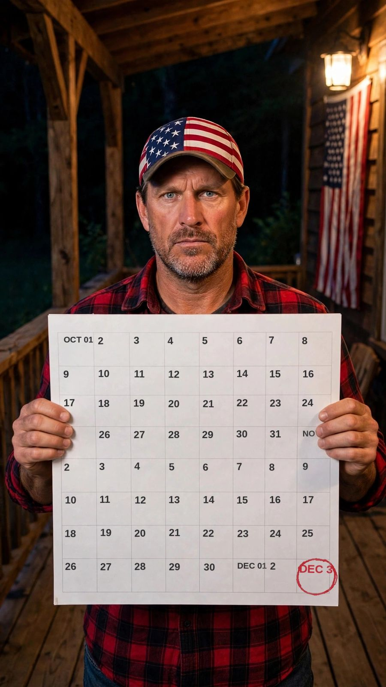
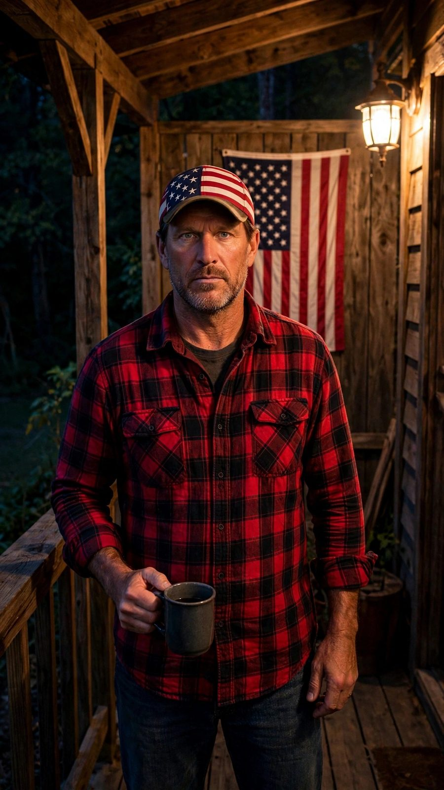

The Porch · Est. for the count
THE NEXT FRANK'S LAW AIN'T MINE. IT'S YOURS.
until the count ends — December 3, 2026
Vote on the next Frank's Law. Frank reads 5 voters' names on the Porch. The winning Law gets printed. Your email is your ballot — free, always.
🗳 Cast your ballotStep onto the porchTHE BALLOT
Every week I hand down a new Frank's Law, and America argues about it in the comments like it's a courtroom. Fine. Let's make it official. Around here the people get a vote, their names get read out loud on the Porch, and the Law that wins gets printed — so your grandkids can argue about it too.
Ballot counted. Welcome to the Porch. 🪑
Your vote's in the pile, same as everybody's — fair's fair. Check your inbox: your first Porch letter is on its way, and your free Countdown Packet is inside it. Put it on the fridge.
Five voters get their names read out loud every week. Keep showing up and one of them's yours.
I'm Freedom Frank, and I approve this message.
The storyWHY DEC. 3
They gave you a number. It was wrong. Fourteen Americans never came home from Fort Hood, and Washington called it 'workplace violence.' Frank counts all 14 — and on December 3, 2026, the count ends. This porch is how nobody gets away with making you forget.
That's why the calendar on the porch runs from October 1st to December 3rd, and why every day gets said out loud. A country that remembers beats a government that files things away.
Count me in — cast a ballot
The offerTHE COUNT
THE COUNT — a free printable countdown packet is coming for everyone on the list. All 57 days, Day 56 to Day 0, and the names page — the 13 they counted, and the 14th they didn't. Print it, put it on the fridge, and count down with us to December 3rd.
It's free. All it costs you is showing up.
Get the Countdown Packet — freeOn the list already? The packet link rides inside your Porch letters too.

Frank's flagshipTHE TRADES PLEDGE
College isn't the only ladder. Frank's flagship sermon: a kid who can fix things will never be broke. The Trades Pledge is how the porch says it together — for the kids and grandkids coming up behind us.
I work with my hands, or I honor the ones who do.
— The Trades Pledge, from the porch
I won't mock a trade to sell a degree.
A kid who can fix things will never be broke.
Somebody's gotta build the country — might as well be ours.
Signed. Your name's on the board.
That's the whole transaction — no dues, no pitch. When Frank talks trades, he's talking to a board with your name on it.